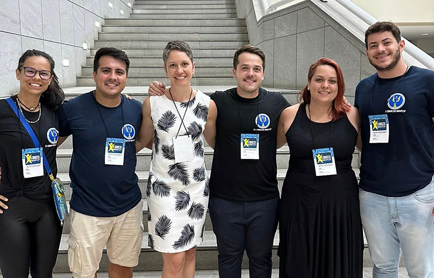
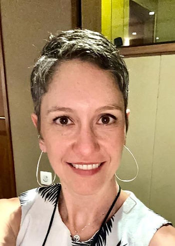
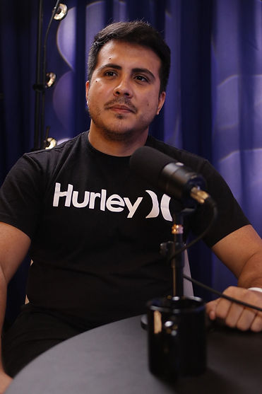
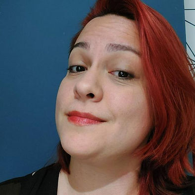
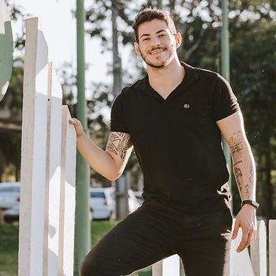
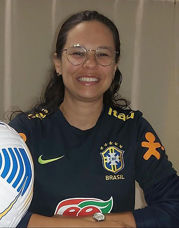
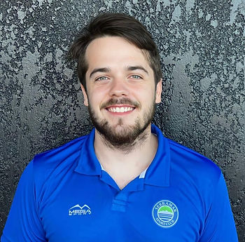

Durante o IX Congresso ABRAPESP de Psicologia do Esporte, realizado em novembro de 2023 na UNIFASE em Petrópolis – RJ, os associados ABRAPESP elegeram por aclamação a nova gestão que conduzirá a entidade no biênio 2024-2025.
A chapa eleita é encabeçada por Marina Gusson que assume a presidência, acompanhada por Matheus Vasconcellos como vice-presidente, Marina de Mattos Dantas como primeira secretária, Gustavo Baroni como segundo secretário, Aline Amorim Lobo como primeira tesoureira, e Ariel Murlik como segundo tesoureiro.

Saiba mais sobre eles:

Presidente: Marina Penteado Gusson (SP)
Psicóloga formada pela USP-Ribeirão Preto e especialista em Psicologia do Esporte. Com experiências profissionais na Seleção Brasileira de Futebol Feminino (2019-2023), SESI-SP (2014-2021) e da Confederação Brasileira de Atletismo de (2014-2017)

Vice-presidente: Matheus Vasconcelos Torres (AM)
Manauara, amazônida, psicólogo formado pela Universidade Federal do Amazonas. Mestre em Saúde Pública pela Fiocruz, especialista em Psicologia do Esporte. Coordenador da Escola de Psicologia do Esporte e sócio-fundador da Rede Naurú.

Primeira secretária: Marina de Mattos Dantas (MG)
Psicóloga, professora e pesquisadora. Mestre em Psicologia Social e Doutora em Ciências Sociais com pós-doutorado em Estudos do Lazer. Vice-líder do Grupo de Estudos sobre Futebol e Torcidas, entre outros. Realiza atendimentos a atletas na clínica e pesquisas sobre futebol, relações de poder e produção de subjetividade.

Segundo secretário: Gustavo Baroni (PR)
Bacharel, mestre e doutorando em Educação Física pela Universidade Estadual de Londrina (UEL). Graduando em Psicologia e membro do Grupo de Estudos em Atividade física, Psicologia e Saúde (GEAPS/UEL).

Primeira tesoureira: Aline Amorim Lobo (MA)
Nordestina, residente em São Luís MA, apaixonada por futebol e amante dos esportes, com formação em Psicologia e Educação Física. Atua como Psicóloga clínica e esportiva, docente e pesquisadora em Políticas Públicas em Saúde Mental. Mestre em psicologia pela Universidade Federal do Maranhão.

Segundo tesoureiro: Ariel Murlik (RS)
Psicólogo pela UNICNEC (Osório/RS). Pós graduado em Psicologia do Esporte e Projetos Esportivos pela ESUDA (PE). Mestre em Psicologia Clínica pela UNISINOS (RS). Psicólogo clínico e do esporte.
A nova liderança da ABRAPESP expressa compromisso renovado com o avanço da Psicologia do Esporte no Brasil. Marina Gusson diz: “Liderar um coletivo da categoria com abrangência nacional e reconhecimento do Sistema Conselhos de Psicologia é uma grande responsabilidade. A nossa diretoria toma posse no aniversário de 20 anos da Associação, simbolicamente temos a tarefa de colocar a associação no universo adulto das instituições, aprimorando os fluxos e dinâmicas, visando cada vez mais profissionalismo, assim como dar atenção aos temas centrais que os profissionais da área enfrentam. É um grande desafio e estamos todos muito animados com essa tarefa.”
Em depoimento, Matheus Vasconcelos nos conta: “Sempre acreditei que espaços coletivos são capazes de fortalecer não somente as pessoas, mas também os espaços de trabalho que elas circulam ao longo da sua trajetória de vida. Considerando a psicologia no esporte no Brasil, foi justamente na ABRAPESP que encontrei a oportunidade de contribuir com a construção de algo potente na psicologia e esse foi o motivo de ter topado somar forças nessa nova gestão. Por isso, queria aproveitar para convidar cada pessoa para se juntar à esta nova gestão. Meu convite é para que você abrace uma ideia. Que você abrace uma propósito coletivo da psicologia do esporte através da ABRAPESP.”
A ABRAPESP inicia esse novo ciclo sob a liderança da chapa eleita com otimismo e dedicação para fortalecer ainda mais a presença da Psicologia do Esporte no cenário nacional, reforçando o papel fundamental dessa especialidade para a saúde, o bem-estar e o desempenho desde praticantes de atividade física, exercício e esporte até os atletas de alta performance, assim como dos profissionais envolvidos nessas áreas de atuação.